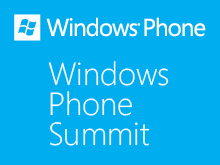
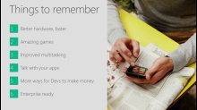
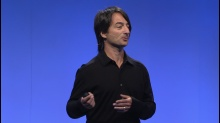
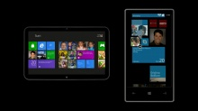
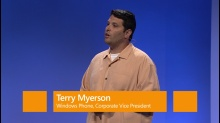
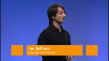
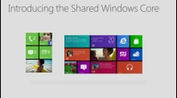
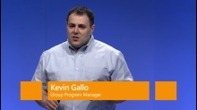

Windows Phone engineering director Joe Belfiore shares highlights of our next mobile operating system, coming later in 2012.
Developer Platform Summary - Kevin Gallo, Windows Phone 8[WMV] [0:01:21] [2012/06/22]Kevin quickly highlights the key points of the Windows Phone 8 developer platform.
Intro - Terry Myerson, Windows Phone 8 [WMV] [0:03:53] [2012/06/22]
[WMV] [0:03:53] [2012/06/22]Terry Myerson welcomes attendees to the Windows Phone Summit, and briefly reviews how the platform has progressed to date.
Keynote[WMV] [1:56:32] [2012/06/22]Watch the on-demand video of our June 20 press event in San Francisco outlining the past and future of Windows Phone.
Platform Announcements Demo Joe Belfiore, Windows Phone 8[WMV] [0:32:12] [2012/06/22]Watch Joe demo live Windows Phone 8 code, showing off the new Start screen, NFC support and more.
Hardware, Apps and closing remarks Terry Myerson, Windows Phone 8[WMV] [0:16:33] [2012/06/22]Terry discusses hardware, language support, and also announces a major milestone in app publishing to the Windows Phone Marketplace. Kevin Shields, senior vice president at Nokia, announces new…
Eight Platform Announcements Joe Belfiore, Windows Phone 8[WMV] [0:23:04] [2012/06/22]Joe tours eight new platform announcements in Windows Phone 8, and how they will benefit consumers, developers and hardware vendors.
Windows 8: Shared Core Joe Belfiore, Windows Phone 8[WMV] [0:03:44] [2012/06/22]Joe Belfiore announces Windows Phone 8 will share the same core technology as Windows 8, and describes how this relationship will enable a wave of new mobile scenarios for consumers, developers and IT…
Developer Platform Drill Down - Kevin Gallo, Windows Phone 8[WMV] [0:33:00] [2012/06/22]Kevin Gallo, drills further into the new Windows Phone 8 developer platform, and increased opportunity. He also unveils new capabilities and features for business users and enterprises.